________________________________ ◇◇◇_____________________
https://www.sema.org.es/es/cedya2024/
Bilbao, 24-28 de junio de 2024
_______
________________________________ ◇◇◇_____________________
https://www.crm.cat/jisd2024/
Barcelona, July 8-12, 2024
_______________
The School on Interactions between Dynamical Systems and Partial Differential Equations (JISD) is an international summer school that has taken place at the School of Mathematics and Statistics of the Universitat Politècnica de Catalunya (UPC) since 2002. The last four editions have been held at the Centre de Recerca Matemàtica (CRM).
The JISD is an annual meeting between experts and young researchers in Dynamical Systems and Partial Differential Equations (PDEs). It is designed to encourage and enhance the exchange of knowledge and methods, with the goal of advancing the study of cutting-edge problems in the aforesaid fields of mathematics and with the aim of fostering interaction among the participants. The symposium is aimed at local researchers, as well as scientists from the rest of Spain and foreign countries. It is organized into four advanced courses of about 7 hours and complemented by a poster session by young researchers. Throughout the latest editions, the attendance numbers have ranged between 60 and 100 participants, mostly internationals.
A primary objective of the JISD is to attract talented young researchers who can present a poster to put them in a condition to benefit from exposure to world-leading experts and help them establish working relationships that could prove critical for their short and long-term success. An especially strong effort has been devoted in past years to encourage the participation of undergraduates, PhDs and postdocs from developing countries and, more generally, young researchers who may encounter difficulties in accessing adequate financial support.
Marie-Claude Arnaud (Université Paris Cité): Conformal Dynamics
Abstract: Beyond Hamiltonian and symplectic Dynamics, the conformal dynamics study dynamics that multiply a local symplectic form by a factor that is different from 1. This includes for example Hamiltonian systems with friction term. Even if some tools coming from conservative and symplectic dynamics can be used in this setting, some dissipative phenomena appear in is this setting, as attractors. In this course, we will study the conformal dynamics of both classical symplectic manifolds and their extensions, the locally symplectic manifolds. In particular, in the symplectic setting, we introduce and study the natural generalization of Birkhoff attractor in higher dimension. In the locally symplectic setting, we will explain which relation exists between recurrence properties, shape of the orbits and exponential rate of the linearized dynamics (as Lyapunov exponents).
Giovanni Catino (Politecnico di Milano): Stable Minimal Hypersurfaces
Abstract: I will present an overview on the classification problem for stable minimal hypersurfaces in the Euclidean space, starting from the seminal work of Schoen-Simon-Yau in the 70’s to the recent advancements obtained by O. Chodosh and C. Li and by myself in collaboration with P. Mastrolia and A. Roncoroni.
Xavier Ros-Oton (ICREA – Universitat de Barcelona – Centre de Recerca Matemàtica): Integro-Differential Elliptic Equations
Abstract: The aim of this course is to provide an introduction to the regularity theory for integrodifferential elliptic equations. Such a class of equations often arises in Analysis, Probability theory, Mathematical Physics, and in several contexts in applied sciences, and this area of research has attracted great interest in the PDE community in the last 15 years, especially since the first works of Caffarelli and Silvestre on the topic. We will start with the basic theory for linear equations, to then give an overview and prove some results for nonlinear equations, and finally discuss some open problems in this context.
Dmitry Turaev (Imperial College London): Wildness and Richness of Chaos
Abstract: We show how various global and local bifurcations lead to chaos of ultimate richness: one determines, by a simple computation, the effective dimension D of the bifurcational problem (an a priori bound on the number of zero Lyapunov exponents) and then shows that all dynamics possible for all systems in the D-dimensional space can emerge at this bifurcation. The techniques can be applied for constructing deep learning algorithms.
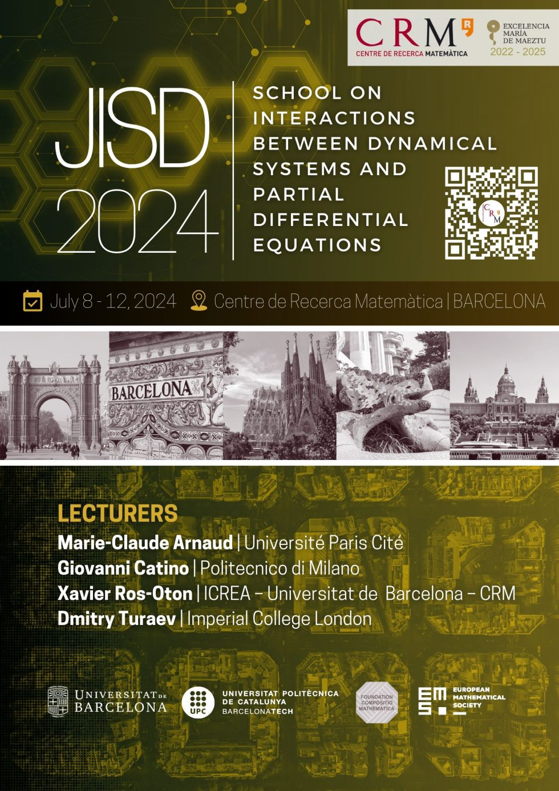
_________________________________ ◇◇◇_____________________
https://www.ecm2024sevilla.com/index.php
Sevilla, July 15-19, 2024
_________________

_________________________________ ◇◇◇_____________________
https://semf.org.es/school2024/
Valencia, 22-26 de julio de 2024
__________
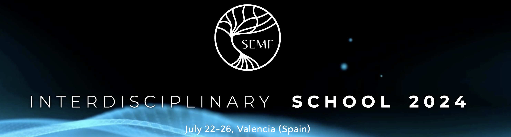
La temática de la escuela es variada: computación, biología evolutiva, física, filosofía de la ciencia, literatura y matemáticas, etc.
Las plazas son limitadas. Quienes participen en la Escuela viajando a Valencia tendrán acceso a una residencia patrocinada con precio reducido y excelentemente ubicada, a escasos minutos del lugar del evento.
El objetivo de este evento es reunir a un grupo de jóvenes investigadores, creadores y estudiantes que participen en un entorno intelectual único mientras asisten a charlas y cursos cortos impartidos por perfiles expertos. Algunos ponentes y temas que se tratarán son:
Stephen Wolfram (Wolfram Institute) - Computational Evolution.
Rossana Mastrandrea (IMT School of Advanced Studies) - Networks and Entropy.
Irida Altman (ETH Zurich) - Literary Aspects of Mathematics.
Tom Froese (Okinawa Institute of Science and Technology) - Biology, Cognition, Computation, Complexity.
Mel Andrews (University of Cincinnati, Carnegie Mellon University) - Machine Learning in Science.
Sandra Ranilla-Cortina (Credit Suisse) - Industry & Academia.
Más información en la página web de la Escuela.
_____________________________________ ◇◇◇_____________________
Escuela de verano en Matemáticas de la UIPM 2024
Santander, 22-26 de julio de 2014
____
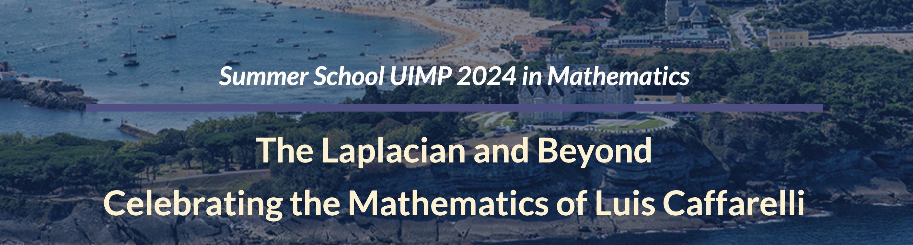
Los profesores Matteo Bonforte (UAM-ICMAT) y Juan Luis Vázquez (UAM-RAC) han organizado la escuela de verano en Matemáticas de la UIPM 2024 The Laplacian and Beyond, Celebrating the Mathematics of Luis Caffarelli. El evento tendrá lugar del 22 al 26 de julio del 2024, en la sede de la Universidad Internacional Menéndez Pelayo (UIMP), Palacio de la Magdalena, Santander (España).
El profesor Luis Caffarelli ha sido una figura clave en las últimas cuatro décadas, y su maestría es ampliamente reconocida, por lo que ha sido galardonado con el premio Abel 2023, además de muchas otras distinciones de prestigio (Wolff, Steele, etc.). La escuela reúne a figuras destacadas, colaboradores de Luis Caffarelli. El principal público objetivo son investigadores en sus primeras etapas de formación, tanto doctorales como posdoctorales, así como investigadores seniors.
La escuela contará con dos cursos principales, impartidos por Xavier Cabré (ICREA-UPC, Barcelona) y Alessio Figalli (ETH Zürich, director FIM). Las conferencias de una hora estarán a cargo de investigadores de renombre en los campos de las EDP no lineales y de frontera libre. En estos dos bloques se abordarán el panorama amplio de los temas matemáticos investigados por Luis Caffarelli, desde principios de siglo hasta la actualidad, destacando su vitalidad e influencia.
El evento tendrá un aforo limitado y habrá un programa de becas para los participantes jóvenes, la información se puede encontrar en la página web.
_____________________________________ ◇◇◇_____________________
http://pcmap.unizar.es/~jaca2024/
Jaca, September 4-6, 2024
_______________
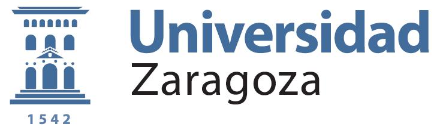 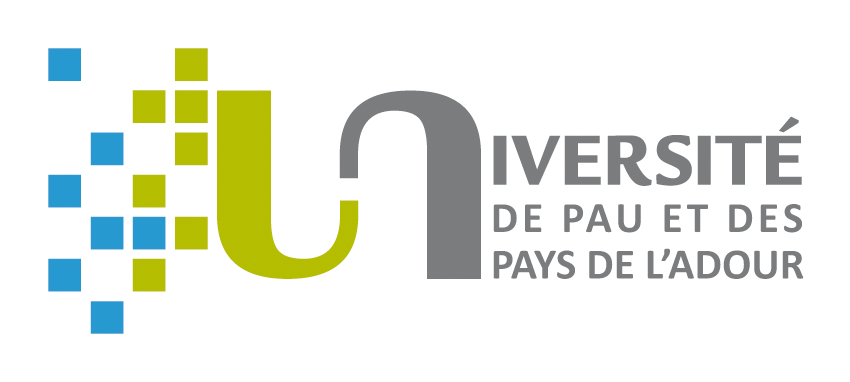
Del 4 al 6 de septiembre de 2024 se celebrará en la residencia universitaria de Jaca la conferencia bienal Seventeenth International Conference Zaragoza-Pau on Mathematics and its Applications que organiza la Universidad de Zaragoza y la Université de Pau et des Pays de L’Adour. El objetivo de esta conferencia es el de reunir a investigadores cuyas inquietudes residen en la aplicación de las matemáticas al estudio de problemas provenientes de diversas disciplinas científicas. Se puede participar en la conferencia organizando mini-simposios, presentando comunicaciones orales o pósteres.
Amel Ben Abda (Ecole Nationale d’Ingénieurs de Tunis, Tunisia).
Marco Cannone (Université Gustave Eiffel, France).
Matthieu Duponcheel (Université catholique de Louvain, Belgium).
Ernesto Estrada (Instituto de Física Interdisciplinar y Sistemas Complejos, CSIC, Universidad de las Islas Baleares, Spain).
Sarka Necasova (Czech Academy of Sciences, Prague, Czech Republic).
Joan Porti (Universitat Autònoma de Barcelona, Spain).
Justo Puerto (Universidad de Sevilla, Spain).
María Luisa Rapún (Universidad Politécnica de Madrid, Spain).
Blas Vinagre (Universidad de Extremadura, Spain).
Chérif Amrouche, Gilles Carbou, Fabien Caubet, Etel Javierre, José Luis Gracia y María Cruz López de Silanes.
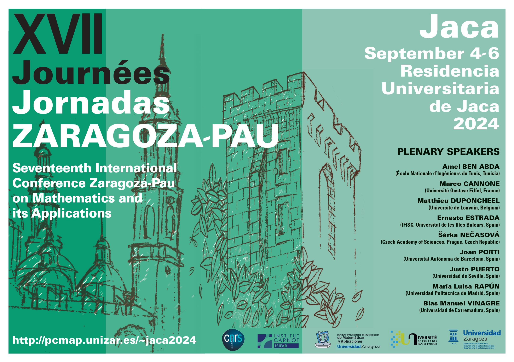
_____________________________________ ◇◇◇_____________________
https://dcn.nat.fau.eu/events/benasque-x-workshop-summer-school-2024/
Benasque, Huesca, August 18-30, 2024
_____________________________________
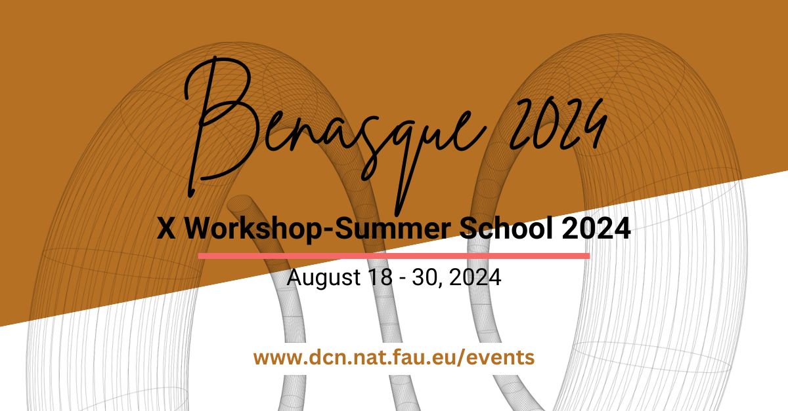
This summer, in August 18-30, 2024 there is the Benasque X Workshop-Summer School 2024: Partial differential equations, optimal design and numerics at the Benasque Center for Science in the Spanish Pyrenees (300Kms. northwest from Barcelona).
You can register today and see more details: https://dcn.nat.fau.eu/events/benasque-x-workshop-summer-school-2024/.
The main purpose of this X Workshop-Summer School is to build an opportunity between young researchers and distinguished mathematicians to share recent results, ideas and projects related to the theory of Partial Differential Equations (PDE), with particular emphasis on issues related with its numerical approximation, the optimal design and control. This new edition will pay special attention to the interactions with Data Sciences and Machine Learning.
_____________________________________ ◇◇◇_____________________
http://w3.ual.es/Congresos/na-e-pde-sanjose24
San José, Almería, September 26-28, 2024
_____________________________________
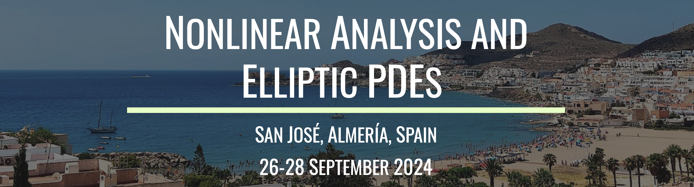
We are pleased to announce the upcoming workshop on Nonlinear Analysis and Elliptic PDEs, San José, Almería 2024, to be held at the Hotel MC San José in the village of San José, near to the city of Almería, from the 26th to the 28th of September 2024.
The event is organized by the University of Almería, Department of Mathematics, and the project PID2021-122122NB-I00. During the event we will celebrate David Arcoya’s 60th birthday. Gala dinner to be held on 27 September 2024.
Although participation is free of charge, for organizational reasons, registration is compulsory on the following website:
On this website you will find all the information about the event. For more information, please contact the organizing committee at
NPDE24@ual.es
| José Carmona, jcarmona@ual.es |
| Pedro J. Martínez-Aparicio, pedroj.ma@ual.es |
| Alexis Molino, amolino@ual.es |
| Salvador Villegas, svillega@ugr.es |
_____________________________________ ◇◇◇_____________________
HORIZON-MSCA-2024-PF-01-01
____
La convocatoria de acciones Marie Skłodowska-Curie Postdoctoral Fellowships (MSCA PF) abrió el pasado 23 de abril y cerrará el 11 de septiembre de 2024.
Toda la documentación oficial de la convocatoria así como el acceso al sistema de envío de solicitudes ya está publicada en el Funding and Tenders Portal, y la documentación de referencia para elaborar las solicitudes se pueden encontrar aquí: http://u.uma.es/e3z/.
Adicionalmente, en el portal español de Horizonte Europa podéis encontrar recursos adicionales como las grabaciones y presentaciones de sesiones informativas y documentación de apoyo.
| Ayuda GPE2023-001264-P |
| MCIN/AEI/10.13039/501100011033 |
| 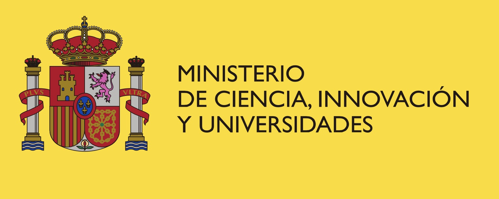 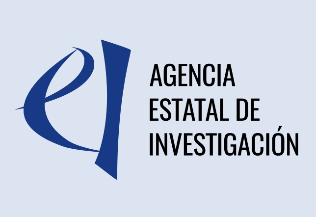 |
https://www.crm.cat/math-somma-junior-meeting-2024/
Barcelona, October 2-4, 2024
________
Welcome to the Math SOMMa Junior Meeting 2024. This event is dedicated to early-career researchers, including predoctoral and postdoctoral researchers, and aims to enhance collaboration among the prestigious Severo Ochoa and Maria de Maeztu research institutions in mathematics; the Basque Centre for Applied Mathematics (BCAM), Instituto de Ciencias Matemáticas (ICMAT), Instituto de Matemáticas de la Universidad de Granada (IMAG), Centre Internacional de Mètodes Numèrics a l’Enginyeria (CIMNE), and the Centre de Recerca Matemàtica (CRM).
Our diverse program is designed to stimulate intellectual exchange and networking. It features a mix of plenary sessions, contributed talks, and a dynamic poster session. Alongside these, we have planned a series of complementary activities to foster networking and collaboration.
We warmly invite you to be an active participant, whether by presenting your latest research, joining in enriching discussions, or simply immersing yourself in this engaging community.
Join us in Barcelona for an unforgettable experience of learning, collaboration, and growth!
_____________________________________ ◇◇◇_____________________
https://uie2024.sciencesconf.org
Nice, France, October 8-11, 2024
_____
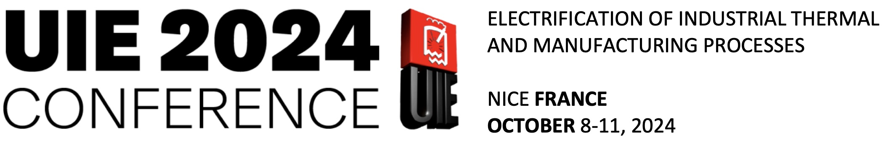
Following the long tradition of International UIE-Conferences starting 80 years ago in the Netherlands and recently taken place in Hannover/Germany 2017 and Plsen/Czech Republic 2021, Mines Paris PSL organizes the 20th International UIE-Conference on Electrification of Industrial Thermal and Manufacturing Processes in Nice, France.
The UIE-Conference 2024 will be an excellent forum for presentations and discussions around recent results in scientific and applied research as well as innovative industrial developments and technological solutions by international scientific, research and industrial experts.
Induction heating and induction hardening
Resistance heating
Microwave heating
Electromagnetic stirring
Magnetic pulse forming/joining/welding
Melting
Metal recycling and purification
Electrification of industrial processes
Electro-heating technologies and sustainability
Computational Electromagnetism
Benchmarks for model validation
Process design and optimisation
Machine-learning
Artificial Intelligence and its place in Electromagnetic Processing of Materials
Digital twins
Predictive maintenance
Power quality
Security issues
Electromagnetic wave exposition and health issues
…
The Conference will be held in Nice (France) on October 8-11, 2024 in the Saint-Paul Hôtel. The Saint-Paul hotel majestically faces the sea, built in a former 19th century theological seminary which has recently been fully renovated. This exceptional location offers the best of a quiet area and is within walking distance from the heart of Nice, capital of the French Riviera.
Prof. F. Bay, Chairman, Centre for Material Forming, Mines Paris PSL, France - Dr. J. Alves, Chairman, Transvalor, Nice, France
Prof. E. Baake, Leibniz University of Hannover, Germany - Prof. J. Barglik, Silesian University of Technology, Poland - Prof. V. Bojarevics, University of Greenwich, UK
Prof. P. Di Barba, University of Pavia, Italy
Prof. I. Dolezel, University of West Bohemia, Czech Republic
Prof. F. Dughiero, University of Padua, Italy
Pr. M. Forzan, University of Padua, Italy
Dr. G. Gerbeth, Helmholtz-Zentrum Dresden-Rossendorf, Germany - Prof. D. Gomez, University of Santiago de Compostela, Spain
Hans De Keulenaer, European Copper Institute, Belgium
Prof. C. Leonelli, University of Modena-Reggio Emilia, Italy
Prof. S. Lupi, University of Padua, Italy
Prof. A. Jakovics, University of Latvia, Latvia
Dr. V. Kotlan, University of West Bohemia, Czech Republic
Prof. K. van Reusel, Katholieke University of Leuven, Belgium - Prof. P. Salgado, University of Santiago de Compostela, Spain - Prof. E. Wang, Northeastern University, China
The official language of the Conference will be English.
Please send your abstract including title of paper, names and affiliation of authors, contact information of corresponding author and description of content of the paper
Abstracts should be sent (both in .doc and .pdf format) through the website https://uie2024.sciencesconf.org. Authors of selected abstracts will be asked to provide an 8-page full text which will be published in special issues of international indexed journals. Further information will be provided on the Conference web-site.
A table-top display exhibition area will be offered for participants from industry and research institutions for presentation of their products, solutions and services. Additional information will be provided on the website.
_____________________________________ ◇◇◇_____________________
https://w3.ual.es/Congresos/icoa/
Almería, 17 y 18 de octobre de 2024
_____________________________________

Esta reunión es un evento de gran prestigio en su ámbito que en los últimos cuatro años ha sido celebrado en un país distinto, siendo España el país elegido para la décima edición. Concretamente, la sede en 2024 será la Universidad de Almería.
ICOA ofrece la posibilidad de impartir charlas cortas de quince minutos de duración, así como la publicación de artículos (incluso sin haber impartido charla) en los proceedings del congreso, previa aceptación por pares.
En la web del congreso se encuentra toda la información relativa a participación, cuotas, fechas límites, etc. La inscripción está abierta hasta el 30 de junio de 2024.
_____________________________________ ◇◇◇_____________________
https://eventos.uva.es/109666/detail.html#contact
Valladolid, 4-7 de noviembre de 2024
_
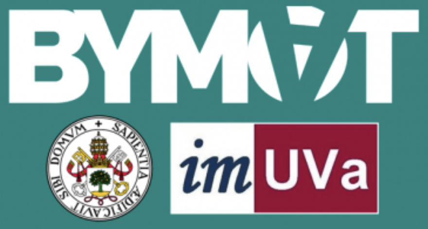
Nos complace anunciar la 6ª edición del congreso internacional Bringing Young Mathematicians Together, que se celebrará en la Facultad de Ciencias de la Universidad de Valladolid del 4 al 7 de noviembre de 2024. Este congreso ofrece una excelente oportunidad para que matemáticos en etapas tempranas de su formación (estudiantes de doctorado, de máster y de etapas avanzadas de grado) presenten charlas o pósteres en un congreso. También tiene como objetivo fortalecer las conexiones entre jóvenes matemáticos y ayudarlos a construir una red profesional.
Maria Montanucci (Technical University of Denmark).
Iacopo P. Longo (Imperial College London).
Giorgia Zaccaria (Università degli Studi di Milano-Bicocca).
Javier Jiménez-Garrido (Universidad de Cantabria).
La organización dispone de un número limitado de becas dirigidas a estudiantes de máster (incluyendo los del año académico 2023/2024), que cubrirán alojamiento y desayuno (del 3 al 7 de noviembre) en habitaciones individuales o dobles (compartidas). La fecha límite para solicitar becas es el 15 de septiembre. La inscripción es obligatoria para los estudiantes becados, pero si los fondos lo permiten intentaremos reembolsar la tarifa de inscripción.
Envío de propuestas para charlas y pósteres: del 17 de junio al 29 de septiembre.
Inscripción: del 17 de junio al 13 de octubre
Inscripción tardía: hasta el 27 de octubre (sujeto a disponibilidad).
| Comité organizador (UVa) |
| Carlos Arranz Simón |
| Sara Asensio Ferrero |
| Christian Canedo Ortega |
| Jesús Dueñas Pamplona |
| Adrián Fidalgo Díaz |
| Beatriz Gómez Martín |
| Mario González Sánchez |
| María Martín Vega |
| Ignacio Miguel Cantero |
| David Rodríguez Vítores |
| Rodrigo San José Rubio |
| Lucía Trapote Reglero |
| Mario Villaizán Vallelado |
| Comité científico |
| Daniel Gil Muñoz (UB) |
| Pablo Gómez Nicolás (UC) |
| Paula Gordaliza Pastor (UPNA) |
| Hristo Inouzhe Valdés (UAM) |
| Paula María López Pérez (UNIOVI) |
| Ignacio Miguel Cantero (UVa) |
| Carlos Jesús Moreno Ávila (UEx) |
| Víctor Muñoz Villarragut (UPM) |
| Luis José Santana Sánchez (UVa) |
| María Dolores Torres González (UGR) |
Para más información, por favor visite la página web de este evento.
_____________________________________ ◇◇◇_____________________